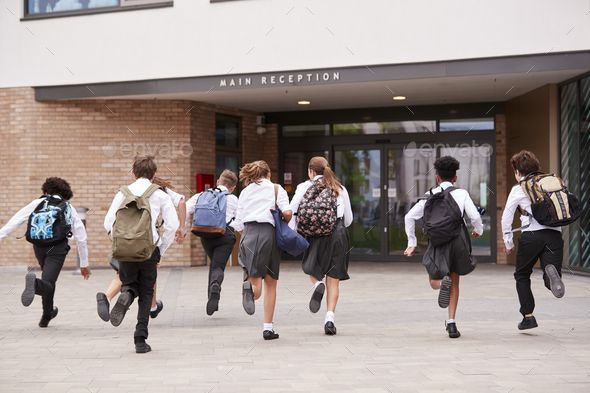

Secondary School Life
- Secondary school education is vital for student development since it not only provides academic information but also encourages critical thinking, creativity, problem-solving skills, and prepares students for future difficulties. Secondary school serves as a basis for higher education and career goals, making it critical to maintain high standards.
- Secondary school is regarded compulsory in most nations until a specific age since, as previously stated, it acts as a foundation in life, with certain disciplines requiring you to apply what you have learned in real life. Students who acquire a quality education are more likely to continue their education and training throughout their life.
- Secondary education equips students with the fundamental knowledge and abilities they need to advance in their academic careers or enter the profession.
Secondary school prepares students for the difficulties of further education, careers, and everyday life. - Secondary education focuses on comprehensive development rather than simply conveying academic knowledge. Students study a wide range of courses, including mathematics and physics, as well as languages, arts, and humanities. This exposure helps them identify their interests and abilities, promoting overall growth.